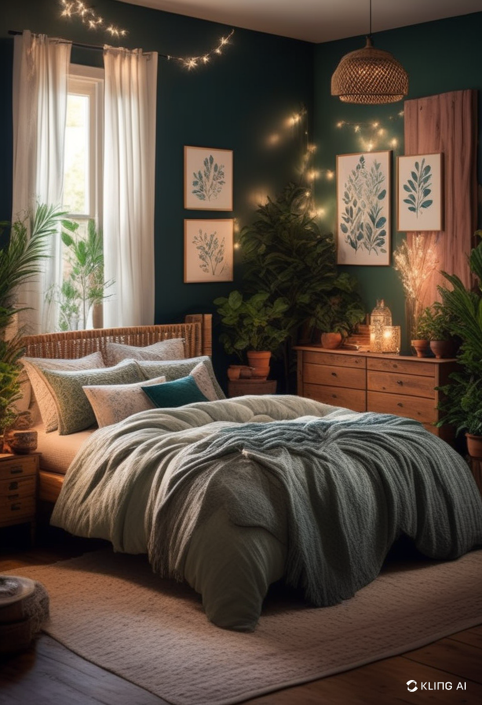

Decorating a small room can be challenging, but with the right strategies, you can transform any compact space into a stylish and functional retreat. Whether you live in a studio apartment, a tiny house, or simply want to optimize a small bedroom, smart decor choices can make all the difference. Here are some innovative small room decor ideas to maximize space while keeping things aesthetically pleasing.
When space is limited, every piece of furniture should serve more than one purpose. Consider investing in:
- Sofa beds or futons for a living space that can double as a guest bedroom.
- Ottoman storage units for additional seating and hidden compartments.
- Foldable desks or wall-mounted tables to save floor space.
Maximizing vertical space helps to declutter and create the illusion of a larger room. Try these ideas:
- Install floating shelves to store books, plants, or decorative items.
- Use wall-mounted lighting instead of floor lamps to free up space.
- Hang pegboards or hooks for organizing everyday essentials without crowding countertops.
Color plays a vital role in making a room feel spacious. Light colors such as white, beige, and pastels reflect natural light and create an airy ambiance. Additionally:
- Place mirrors strategically to reflect light and give the illusion of depth.
- Use layered lighting (ceiling, task, and ambient lights) to enhance the overall brightness.
- Choose sheer curtains to allow natural light to flow in while maintaining privacy.
A cluttered room feels even smaller, so opt for a minimalist design:
- Use furniture with exposed legs to create an open, airy feel.
- Stick to a cohesive color palette to maintain harmony in the room.
Clever storage is key to keeping a small room tidy and organized:
- Use under-bed storage for seasonal clothing and bedding.
- Opt for furniture with built-in storage, such as bed frames with drawers or a storage bench.
- Utilize the space behind doors with hanging organizers for shoes, accessories, or cleaning supplies.
Even a small room can have multiple functional areas. Define spaces with:
- Rugs to visually separate different zones (e.g., a study nook from a sleeping area).
- Room dividers like curtains or shelving units for added privacy.
- Foldable screens to create a workspace or reading corner.
Plants can bring life and freshness to a small space without overwhelming it. Consider:
- Hanging plants to add greenery without taking up floor space.
- Small potted plants on shelves or windowsills for a natural touch.
- Vertical garden panels for an eco-friendly and decorative statement.
Small room decor is all about smart planning and creative solutions. By using multi-functional furniture, maximizing vertical space, and keeping decor minimal yet stylish, you can transform even the tiniest of spaces into a cozy, organized, and aesthetically pleasing retreat. Whether you’re revamping a small bedroom, office, or apartment, these decor ideas will help you make the most of every inch!
